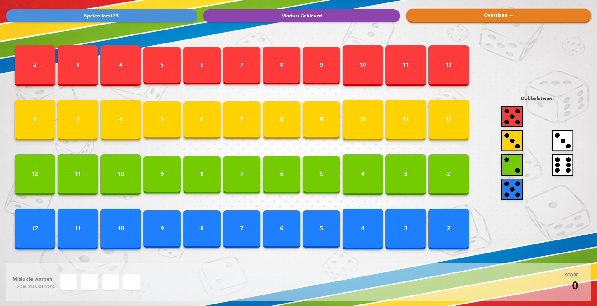

Spelregels
Spelbord

Opbouw van het bord
- Het spelbord bestaat uit 4 gekleurde rijen.
- Elke rij bevat 11 vakjes met getallen.
- De getallen staan in een vaste volgorde.
- Elke rij kan gesloten worden wanneer aan de voorwaarden voldaan is.
Doel van het spel
Verzamel zoveel mogelijk punten door getallen aan te kruisen op je scoreblad.
Spelverloop
- De speler gooit alle dobbelstenen.
- Iedere speler mag de som van de 2 witte dobbelstenen gebruiken.
- Daarna kiest de actieve speler een combinatie van een witte en een gekleurde dobbelsteen.
- Het overeenkomstige getal kan aangekruist worden in de juiste rij.
Belangrijke regels
- Je moet de volgorde van de rij respecteren.
- Je mag geen vakjes aankruisen vóór een eerder aangekruist vakje in dezelfde rij.
- Een vakje kan maar één keer aangekruist worden.
- Het laatste vakje van een rij mag pas aangekruist worden als er al minstens 5 vakjes aangekruist zijn.
Variant van het spel
- Bij de variant van het spel staan de vakjes in een willekeurige volgorde.
- De spelregels blijven gelden.
Mislukte worpen
Als je geen geldig vakje aankruist tijdens je beurt, krijg je een mislukte worp.
Dit levert minpunten op.
Einde van het spel
- Het spel eindigt wanneer een speler 4 mislukte worpen heeft.
- Of wanneer minstens 2 rijen gesloten zijn.